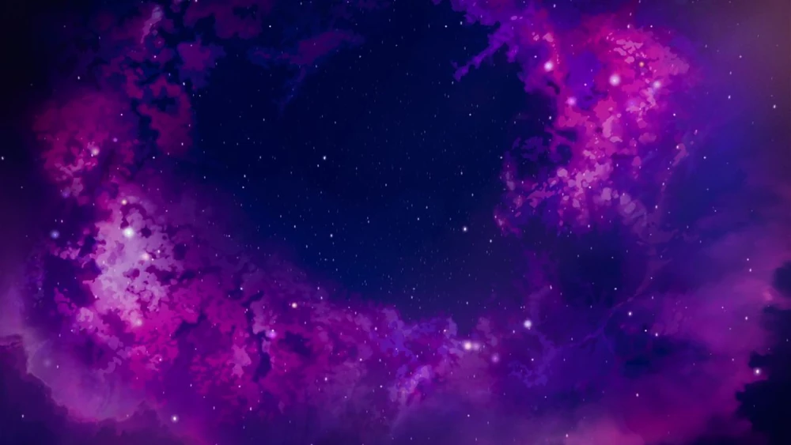

Gwiazdy
Opis
Magia gwiazd jest mało zrozumiała. Opiera się na ogromnej i ponadczasowej mocy kosmosu i obejmuje wróżenie, kosmiczną wizję i spoglądanie w „poza”. Czasami nazywa się to „Niebiańską lub Kosmiczną Magią”. Według Rayli, Gwiezdna magia może być najpotężniejszą magią na świecie. Gwiezdni magowie są niezwykle rzadcy - ponieważ tylko jeden mag rodzi się na całe pokolenie. Stworzenia związane z Gwiazdami są niezwykle rzadkie i rzadko widywane jak np. Jednorożce czy Gwiezdne elfy. Nie wiadomo, kiedy to źródło jest najsilniejsze, a jedynym elfem widzianym dotychczas z tą mocą jest arcymag Aaravos . Gwiazdy kojarzą się z wizją, prawdą, inteligencją, nieziemską, zmieniającą rzeczywistość, ponadczasową, tajemniczą, przeznaczeniem i życzeniami.
Tajemnica
Tajemnica Gwiazd jest obecnie nieznana. Legendy sugerują, że ci, którzy posiadają tajemnicę Gwiazd, rezonują z biciem kosmicznego serca w gwiazdach, cechą niebieską, która przekracza czas i przestrzeń. Oczywiście tylko garstka stworzeń, takich jak Elfy Gwiazd i Gwiezdne Smoki, naprawdę zrozumiała tajemnicę Gwiazd, a w przeciwieństwie do innych Pierwotnych Źródeł, ludzcy magowie wyczerpali się, próbując jedynie wyrazić tę koncepcję słowami.
Splot
Splot tego źródła jest nieznany.
